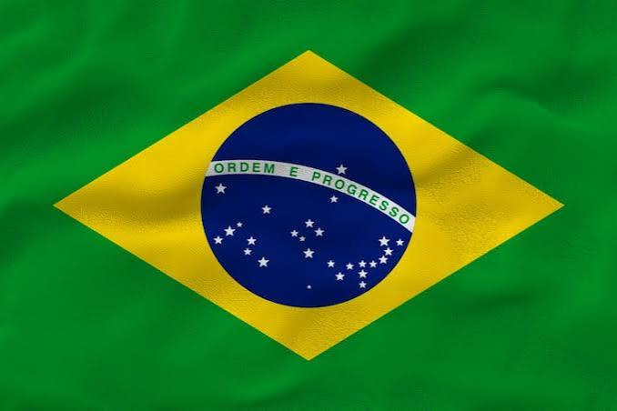

Igor Mota Gonçalves
Sobre mim
Meu nome é Igor e sou desenvolvedor em transição de carreira. Venho de uma trajetória em finanças, vendas e operações corporativas (SAP, Salesforce, Pega), e hoje estou focado em Python e Inteligência Artificial, com interesse especial em visão computacional. Estou cursando Desenvolvimento de Software pela BYU-Pathway Worldwide e Sistemas de Informação pela Universidade Positivo. Gosto de rúgbi, futebol, praia e séries.
Curitiba, PR

Curitiba é a capital do estado do Paraná, no sul do Brasil, e é reconhecida internacionalmente por seu planejamento urbano e sistema de transporte público inovador (os famosos "ônibus-tubo"). A cidade tem um dos maiores índices de área verde por habitante do país, com parques como o Barigui e o Jardim Botânico. É conhecida também por seu clima frio e instável — "as quatro estações em um dia só" — e por abrigar uma forte cena de tecnologia e startups.